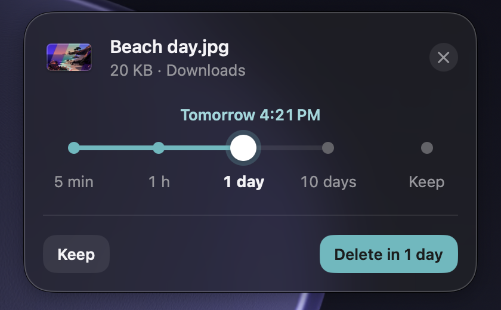
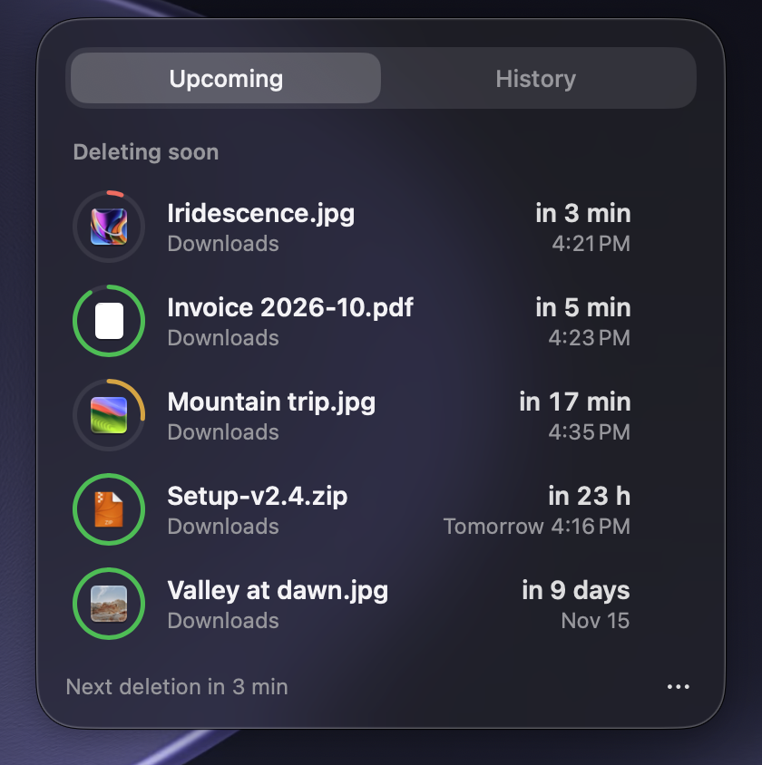
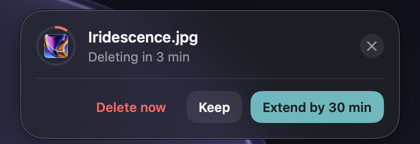
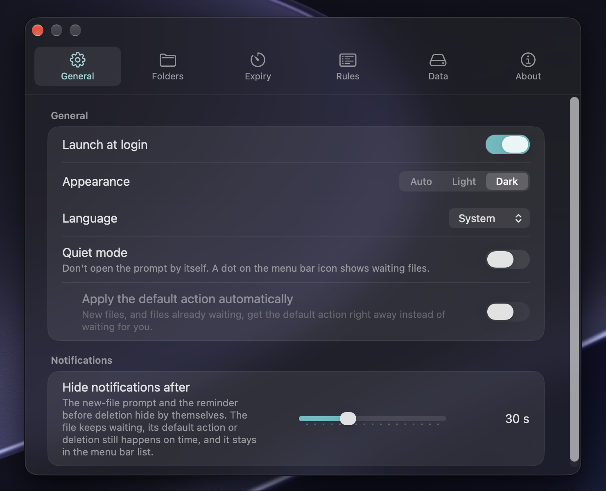

A prompt, a choice, and it is handled.
-
A file lands
Download something into a watched folder and a small prompt opens under the menu bar icon. Ignore it and it hides by itself; the file stays in the list.
-
You pick when it goes
30 minutes, an hour, a day, ten days, or keep it. One slider, one button.
-
It leaves on time
When the time is up, the file moves to the Trash. Put it back from History.
Small app, careful about your files.
- Your own timeline
- 30 minutes, an hour, a day, ten days, or keep the file for good. The times are configurable, and the last one you chose can be the default.
- Rules
- Match by file type, name pattern or folder: installers, screenshots, images, archives, invitations. A matching file skips the prompt and gets its time automatically, with a short notice and a Change button. The starter rules ship off.
- Reminders
- Get a heads-up before a file goes, 5 minutes by default. Extend it, keep it or delete it now.
- Duplicates flagged
- A download identical to a file already in the folder is flagged, with a one-click Delete duplicate, or deleted right away when Quiet mode applies the default action automatically.
- Ignored files
- Name patterns, like
~$*for Office owner files, that DropKeeper never touches. - Trash, never delete
- Expired files go to the Trash, and Put back in History restores them. Deleting by hand shows a notice with an Undo button. Nothing is gone until you empty the Trash.
- Under the menu bar icon
- The prompt is a small floating card that works on any display setup. It hides after a time you choose, 30 seconds by default, and the file stays in the list.
- History
- The last 10 decisions are in the list. A file that went to the Trash can be put back.
- Statistics
- Files handled, kept or moved to the Trash, and the space reclaimed, since the oldest entry in your history. All of it is computed on your Mac.
- Light, Dark or Auto
- Follow the system or pick an appearance of your own in Settings.
- Several folders
- Downloads by default. Add Desktop or any other folder you want watched.
- Renames and moves are tracked
- Rename a file or move it into a subfolder and it is still tracked. Move it out of the watched folders and it is kept.
- Old files stay untouched
- Files that were already there before you installed DropKeeper are never touched.
- Speaks your language
- English, Czech, German, Spanish and French, switchable in Settings.
- Free and open source
- MIT licensed. Read the code, build it yourself, change it.
What you will see.




100 % offline.
- No analytics.
- No tracking.
- No update checks.
- No network access at all.
There is no networking code in the app. CI fails if any networking API appears in the sources, or if the release binary links a networking framework. File names, contents and history stay in a local database on your Mac.
This website has no analytics either and loads no fonts, scripts or images from other servers.
Install it.
Homebrew needs version 7 or newer, so run brew update first.
brew install --cask direcat/tap/dropkeeper
Or download the latest release (.dmg or .zip) and drag DropKeeper to Applications. On first launch it asks for access to your Downloads folder.
Not notarized
DropKeeper is not notarized by Apple, because that needs a paid developer account. The Homebrew cask removes the macOS quarantine flag after installing, so the app opens normally. If you prefer to keep Gatekeeper's check, install manually and follow the steps in the README.